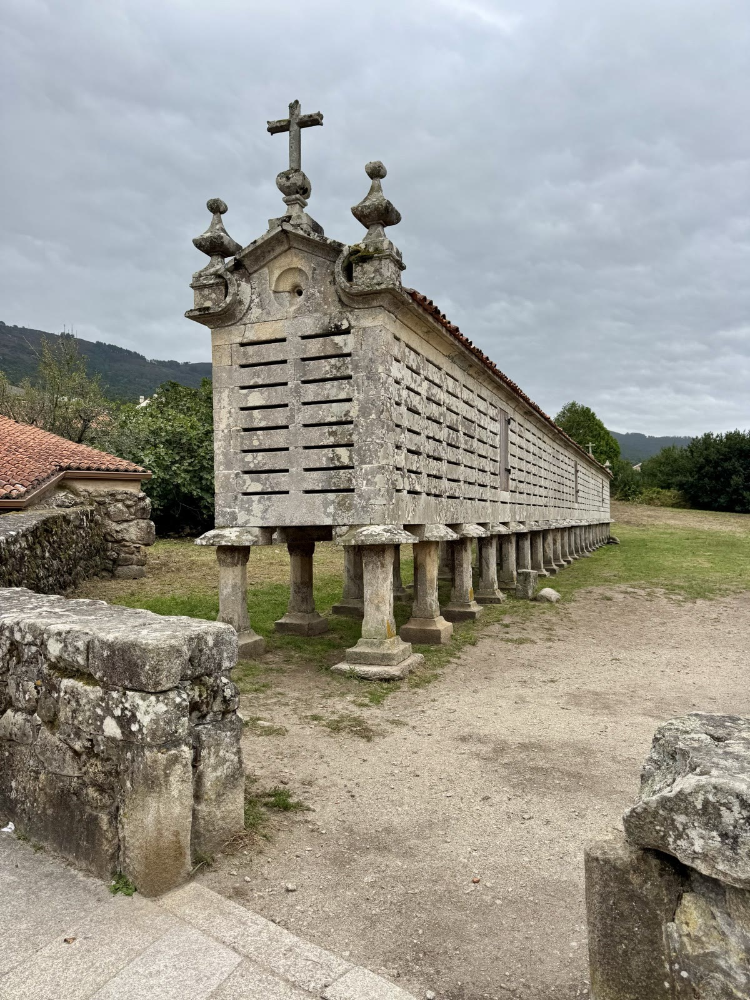
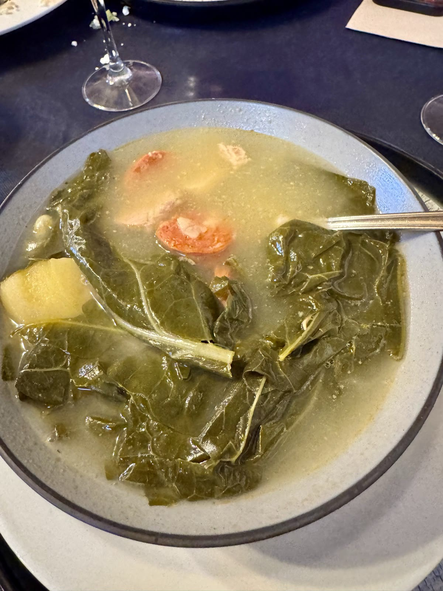
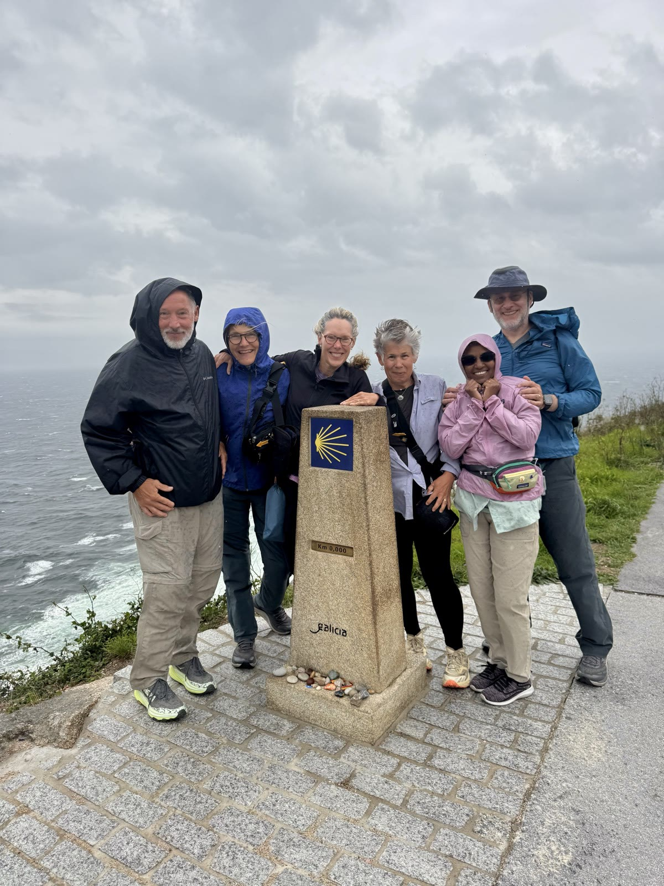
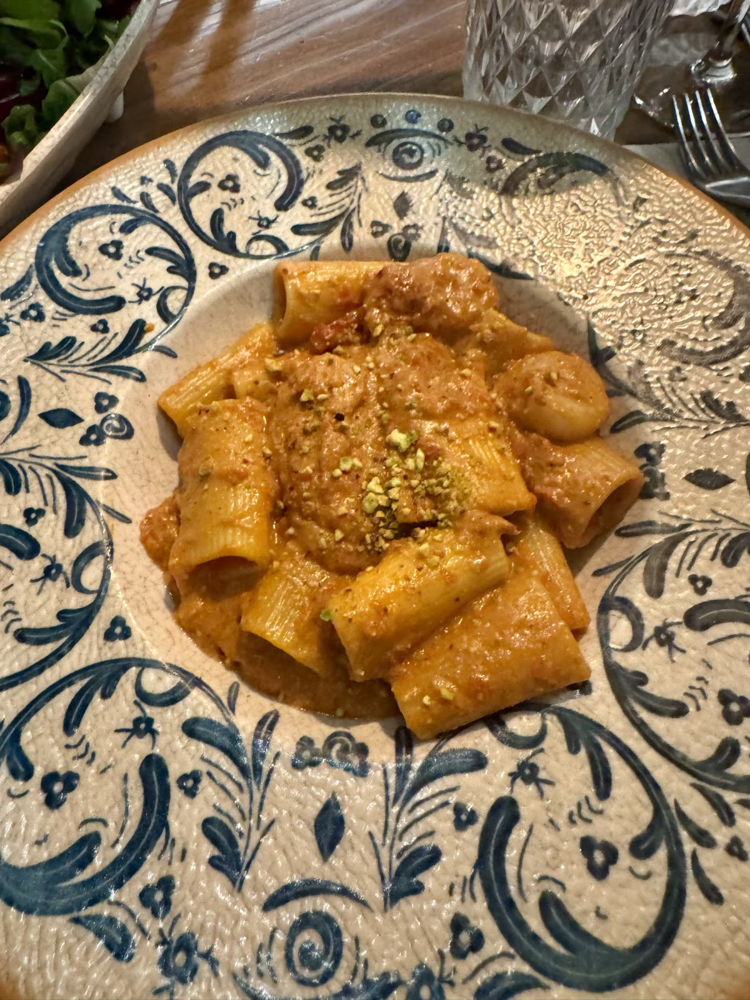
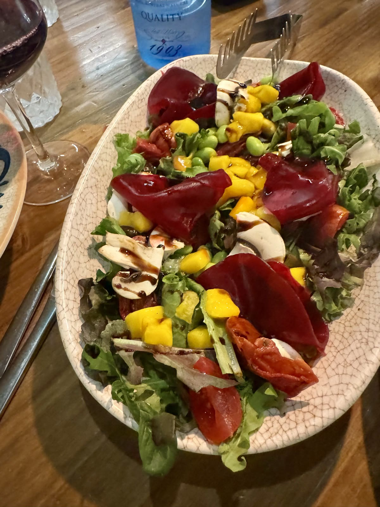

Post Camino Bus Tour
Today it poured. But our Camino is complete! We had a scheduled boat trip through Muros, Cee, and to Fisterra—which was perfect. The Spanish coastline is dramatic with large jagged rocks just beyond the shoreline, but in the unfortunate location for ships. Hence, this area is called the Coast of Death as many sailors and ships met their demise crashing into the hardscape. The last crash occurred in 2002 when an oil tanker hit the shore and spilled thousands of gallons of oil on this delicate coastline. It was a disaster and took nearly 10 years to cleanup and restore the environment.
Among the many architectural structures among houses and farms in suburban and rural areas are the Hotta’s—corn cribs standing on round pillars with roofs and side ventilation. The pillars are designed so that rodents can’t climb into the corn, which is stored to feed animals during the cold rainy winters. Apparently mice can’t climb upside down! Brilliant engineering! Decorated with the Christian sign of the cross and Celtic symbols of fertility—to encourage a long and prosperous growing season, these horas are works of art. It is illegal, in fact, to take them down. Not surprisingly, the churches owned the largest horas—as the villagers paid the village church 10% of their wages. The churches were more governmental than merely spiritual up through the early 1800’s.

We lunched at El Puerto in Fisterra after having fought the 50 mph gale winds. Broth soup made from berza (kale/collard like cabbage green) chorizo, white beans, pork, beans, and a gentle light colored broth was comforting on a cold, rainy, and windy day.

The many pilgrims we saw on the trail today looked determined as they leaned into the wind gusts and we were all left feeling grateful for our sunny days and one drizzly day. Gary and Deb shared trail stories of previous hikes in pouring rain ending in drenched hiking clothes with no access to a dryer. We feel very lucky.
Fisterra is what they used to call “the end of the earth” as it juts out into an ocean with seemingly no end for the pilgrims of the early 14th century. The ocean swells crash against the rocks bathing this jagged, rugged, and rocky cape. How fitting that Claire left her grandmother’s rosary beads on the 0.0 mile marker of this beautiful, final section of the Camino. The energy and powerful spirit of her grandmother surely lives on in Claire and in those of us fortunate enough to spend time with her.

The “last supper” of our pilgrim crew was all Italian—gluten free and delicious. We trudged through the pouring rain, but our efforts were rewarded with homemade lasagna, gluten free pasta with pesto and lemon, an Italian Chianti (of course), and a fresh beet and greens salad. Delicious. We reminisced about our favorite hikes, best views, the challenges in our equipment, shoes, bodies, and terrain. But we all agreed we wouldn’t have changed a thing about our Camino. We had sunshine for all days by one—and it never even rained more than a drizzle.


The best part of this trip were the people, my dearest fellow pilgrims—especially the ones with whom I hiked, dined, and problem solved each day. Being a room mate at 65 for an extended period of time wasn’t hard at all because I had the very best roomie! And there were the pilgrims I met on the trail—the man in a wheelchair, the woman with one leg, the woman with one arm, the woman using two crutches, and the countless mostly elderly couples assisting and supporting each other over rocky ledges, tricky stairs, or those damn cobblestones! Boy—the cobblestones are challenging after the first 5 miles of the day… The kind and thoughtful pilgrims who offered advice, snacks, or first aid items and the lovely grape harvesters who offered bunches of alborino grapes to try! People—that is what my Camino was about.
Feeling grateful, peaceful, and so different than when I started. I didn’t expect my Camino to shift my being, my spirit, my self—but it did. I’ll be thinking about it and processing it for a long time.